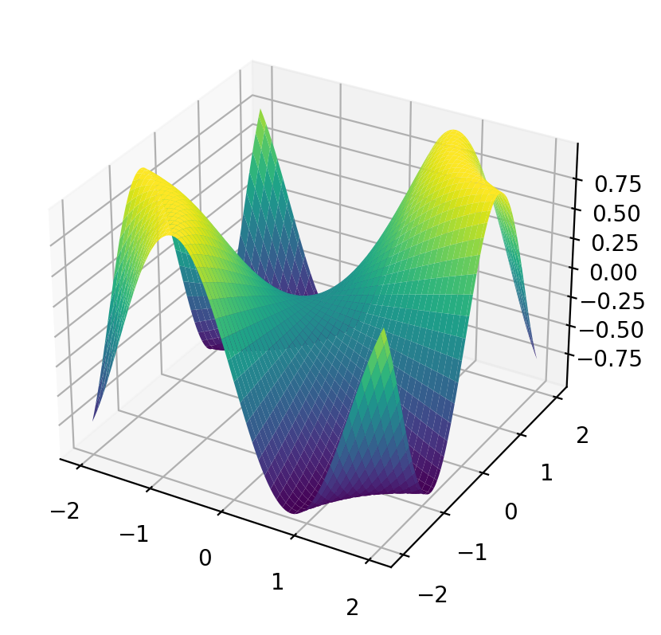
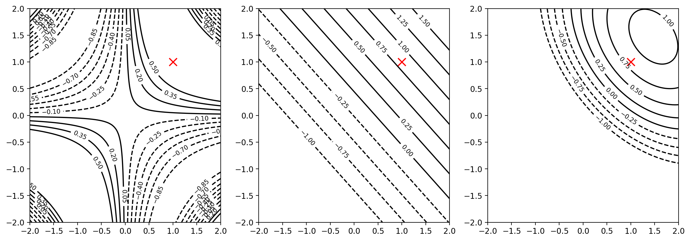
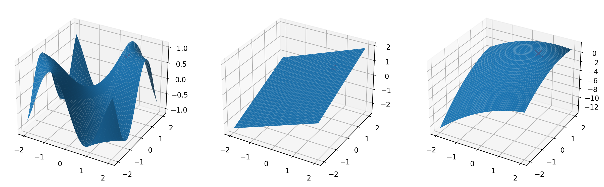

import numpy as np
import jax.numpy as jnp
import matplotlib.pyplot as plt
import jax
%matplotlib inline
%config InlineBackend.figure_format = 'retina'
# Use 64 bit precision for JAX
jax.config.update("jax_enable_x64", True)# Create a 2d function
def f(x):
return jnp.sin(x[0]*x[1])x_range=(-2, 2)
y_range=(-2, 2)
n=100
x = jnp.linspace(x_range[0], x_range[1], n)
y = jnp.linspace(y_range[0], y_range[1], n)
X, Y = jnp.meshgrid(x, y)# Evaluate the function at a grid of points using vmap
def eval_grid(f, x_range=(-2, 2), y_range=(-2, 2), n=100):
x = jnp.linspace(x_range[0], x_range[1], n)
y = jnp.linspace(y_range[0], y_range[1], n)
X, Y = jnp.meshgrid(x, y)
return X, Y, jax.vmap(jax.vmap(f, in_axes=0), in_axes=0)(jnp.stack([X, Y], axis=-1))# Plot the contour of the function
def plot_contour(f, x_range=(-2, 2), y_range=(-2, 2), n=100, ax = None, **kwargs):
X, Y, Z = eval_grid(f, x_range, y_range, n)
if ax is None:
fig, ax = plt.subplots()
levels = jnp.linspace(-1.0, int(jnp.max(Z))+0.5, 11)
contours = ax.contour(X, Y,Z, levels=levels, **kwargs)
ax.clabel(contours, inline=True, fontsize=8)
#ax.imshow(Z, extent= [X.min(), X.max(), Y.min(), Y.max()], origin='lower', cmap='viridis', alpha=0.5)
return axplot_contour(f, colors='k')
# Plot surface of the function
def plot_surface(f, x_range=(-2, 2), y_range=(-2, 2), n=100, ax = None, **kwargs):
X, Y, Z = eval_grid(f, x_range, y_range, n)
if ax is None:
fig, ax = plt.subplots(subplot_kw={"projection": "3d"})
ax.plot_surface(X, Y, Z, **kwargs)
return ax# Plot surface in Plotly
import plotly.graph_objects as go
def plot_surface_plotly(f, x_range=(-2, 2), y_range=(-2, 2), n=100, **kwargs):
X, Y, Z = eval_grid(f, x_range, y_range, n)
fig = go.Figure(data=[go.Surface(z=Z, x=X, y=Y, **kwargs)])
fig.update_layout(scene = dict(
xaxis_title='x',
yaxis_title='y',
zaxis_title='z'))
fig.show()plot_surface(f, cmap='viridis')
plot_surface_plotly(f)Unable to display output for mime type(s): application/vnd.plotly.v1+jsong = jax.grad(f)
H = jax.hessian(f)jnp.array(g([1.0, 1.0]))Array([0.54030231, 0.54030231], dtype=float64)jnp.array(H([1.0, 1.0]))Array([[-0.84147098, -0.30116868],
[-0.30116868, -0.84147098]], dtype=float64)print(type(f([1.0, 1.0])), type(jnp.array(g([1.0, 1.0]))), type(H([1.0, 1.0])))<class 'jaxlib.xla_extension.Array'> <class 'jaxlib.xla_extension.Array'> <class 'list'># First order Taylor approximation around x0
def taylor1(f, x0):
g = jax.grad(f)
t = lambda x: f(x0) + jnp.array(g(x0)) @ (x - x0)
# Print the Taylor approximation
print("f(x) = {:.2f} + {:.2f} (x1 - {:.2f}) + {:.2f} (x2 - {:.2f})".format(f(x0), g(x0)[0], x0[0], g(x0)[1], x0[1]))
return ttaylor1(f, jnp.array([1.0, 1.0]))(jnp.array([0.0, 1.0]))f(x) = 0.84 + 0.54 (x1 - 1.00) + 0.54 (x2 - 1.00)Array(0.30116868, dtype=float64)# Second order Taylor approximation around x0
def taylor2(f, x0):
g = jax.grad(f)
H = jax.hessian(f)
t = lambda x: f(x0) + jnp.array(g(x0)) @ (x - x0) + 0.5*(x - x0) @ jnp.array(H(x0)) @ (x - x0)
# Print the Taylor approximation
print("f(x) = {:.2f} + {:.2f} (x1 - {:.2f}) + {:.2f} (x2 - {:.2f}) + {:.2f} (x1 - {:.2f})^2 + {:.2f} (x2 - {:.2f})^2 + {:.2f} (x1 - {:.2f})(x2 - {:.2f})".format(f(x0), g(x0)[0], x0[0], g(x0)[1], x0[1], H(x0)[0, 0], x0[0], H(x0)[1, 1], x0[1], H(x0)[0, 1], x0[0], x0[1]))
return ttaylor2(f, jnp.array([1.0, 1.0]))(jnp.array([0.0, 1.0]))f(x) = 0.84 + 0.54 (x1 - 1.00) + 0.54 (x2 - 1.00) + -0.84 (x1 - 1.00)^2 + -0.84 (x2 - 1.00)^2 + -0.30 (x1 - 1.00)(x2 - 1.00)Array(-0.11956681, dtype=float64)H(jnp.array([1.0, 1.0]))Array([[-0.84147098, -0.30116868],
[-0.30116868, -0.84147098]], dtype=float64)g(jnp.array([1.0, 1.0]))Array([0.54030231, 0.54030231], dtype=float64)# Plot contour of the Taylor approximation around x0 for both first and second order in comparison with the original function
# 3 subplots
def plot_taylor(f, x0, x_range=(-2, 2), y_range=(-2, 2), n=100, ax = None):
t1 = taylor1(f, x0)
t2 = taylor2(f, x0)
if ax is None:
fig, ax = plt.subplots(1, 3, figsize=(15, 5))
# Mark the point x0
ax[0].scatter(x0[0], x0[1], marker='x', color='red', s=100)
# Plot the contour of the function
plot_contour(f, x_range, y_range, n, ax=ax[0], colors='black')
# Plot the contour of the first order Taylor approximation
plot_contour(t1, x_range, y_range, n, ax=ax[1], colors='black')
ax[1].scatter(x0[0], x0[1], marker='x', color='red', s=100)
# Plot the contour of the second order Taylor approximation
plot_contour(t2, x_range, y_range, n, ax=ax[2], colors='black')
ax[2].scatter(x0[0], x0[1], marker='x', color='red', s=100)plot_taylor(f, jnp.array([1.0, 1.0]))f(x) = 0.84 + 0.54 (x1 - 1.00) + 0.54 (x2 - 1.00)
f(x) = 0.84 + 0.54 (x1 - 1.00) + 0.54 (x2 - 1.00) + -0.84 (x1 - 1.00)^2 + -0.84 (x2 - 1.00)^2 + -0.30 (x1 - 1.00)(x2 - 1.00)
# Plot surface of the Taylor approximation around x0 for both first and second order in comparison with the original function
# 3 subplots
def plot_taylor_surface(f, x0, x_range=(-2, 2), y_range=(-2, 2), n=100, ax = None):
t1 = taylor1(f, x0)
t2 = taylor2(f, x0)
if ax is None:
fig, ax = plt.subplots(1, 3, figsize=(15, 5), subplot_kw={"projection": "3d"})
# Mark the point x0
ax[0].scatter(x0[0], x0[1], f(x0), marker='x', color='red', s=100)
# Plot the surface of the function
plot_surface(f, x_range, y_range, n, ax=ax[0])
# Plot the surface of the first order Taylor approximation
plot_surface(t1, x_range, y_range, n, ax=ax[1])
ax[1].scatter(x0[0], x0[1], f(x0), marker='x', color='red', s=100)
# Plot the surface of the second order Taylor approximation
plot_surface(t2, x_range, y_range, n, ax=ax[2])
ax[2].scatter(x0[0], x0[1], f(x0), marker='x', color='red', s=100)plot_taylor_surface(f, jnp.array([1.0, 1.0]))f(x) = 0.84 + 0.54 (x1 - 1.00) + 0.54 (x2 - 1.00)
f(x) = 0.84 + 0.54 (x1 - 1.00) + 0.54 (x2 - 1.00) + -0.84 (x1 - 1.00)^2 + -0.84 (x2 - 1.00)^2 + -0.30 (x1 - 1.00)(x2 - 1.00)
Second order Taylor series expansion of a function f around a point (x0, y0) is given by (when using the vector notation)
\[f(x,y) = f(x_0,y_0) + \frac{\partial f}{\partial x}(x_0,y_0)(x-x_0) + \frac{\partial f}{\partial y}(x_0,y_0)(y-y_0) + \frac{1}{2} \frac{\partial^2 f}{\partial x^2}(x_0,y_0)(x-x_0)^2 + \frac{1}{2} \frac{\partial^2 f}{\partial y^2}(x_0,y_0)(y-y_0)^2 + \frac{1}{2} \frac{\partial^2 f}{\partial x \partial y}(x_0,y_0)(x-x_0)(y-y_0)\]